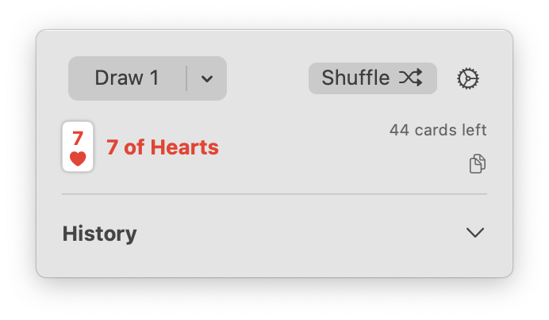
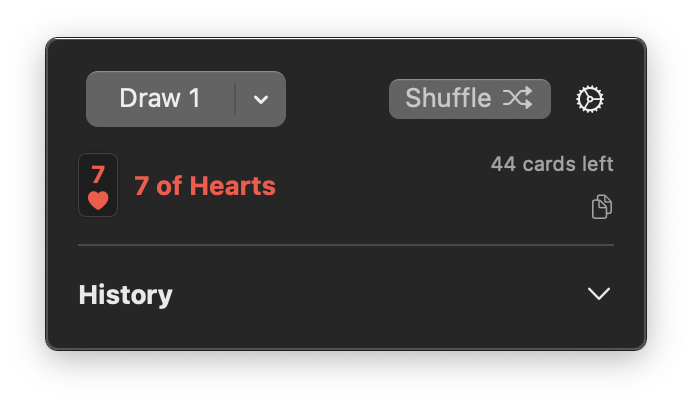

MacRoller
Roll dice from your menubar

- Standard dice notation (2d20 + 1, 4d6 - 2, etc.)
- Detailed results with individual die values
- Roll history with quick reuse
- Easy result copying
MacDeck
Draw cards from multiple decks with a single click


- Support for up to 8 decks
- Visual card display with suit symbols
- Draw history tracking
- Copy results as text or symbols